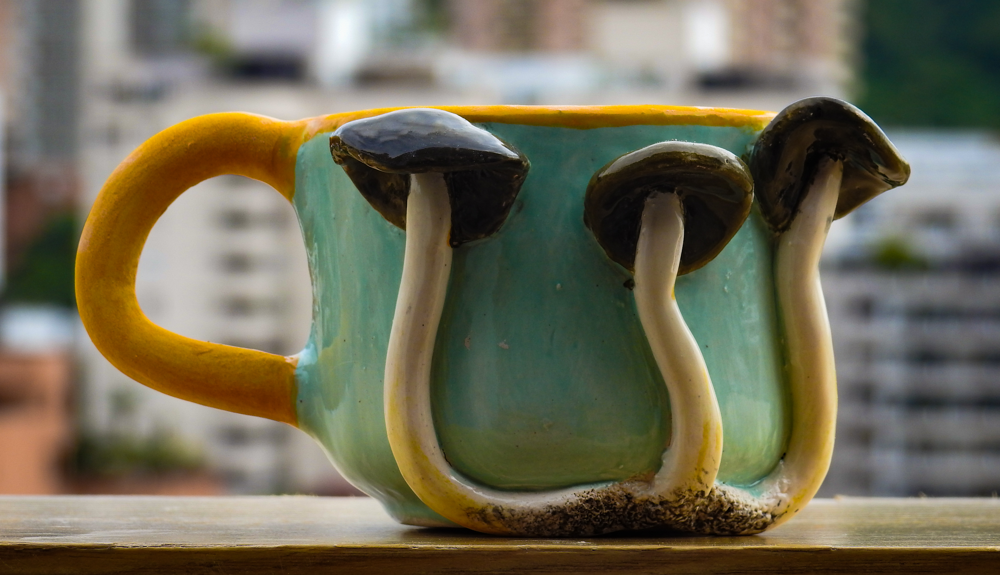
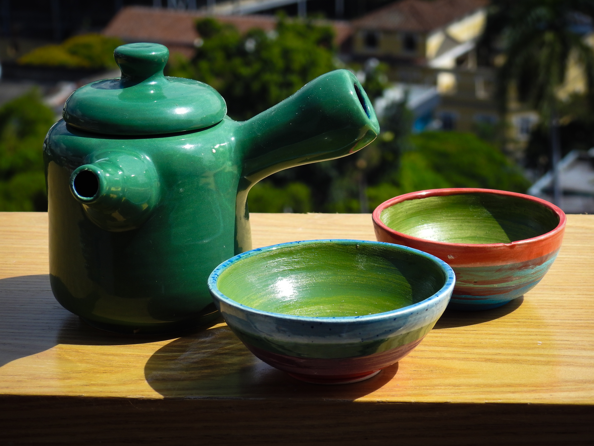
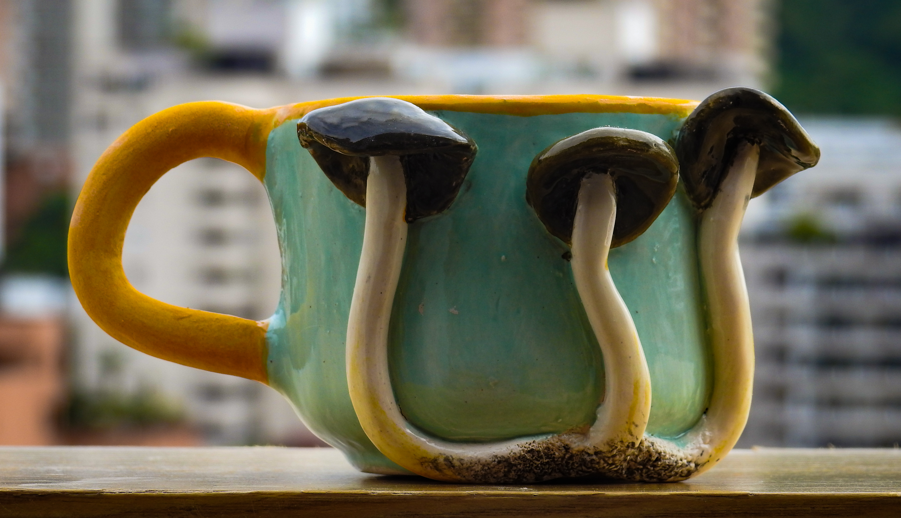
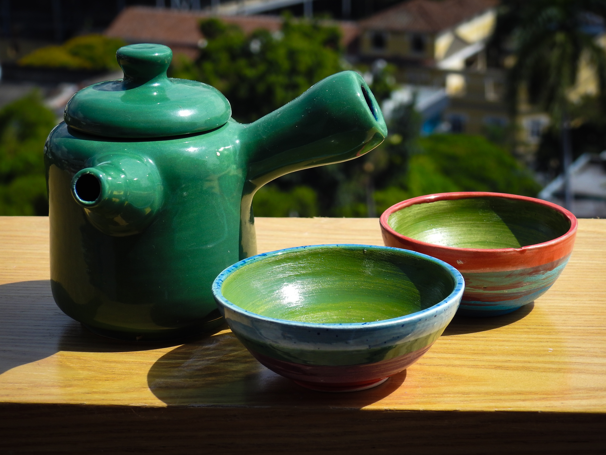
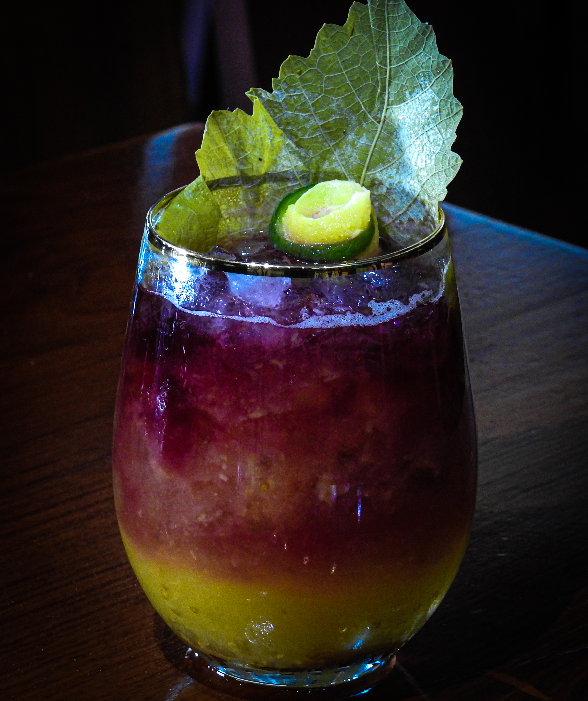
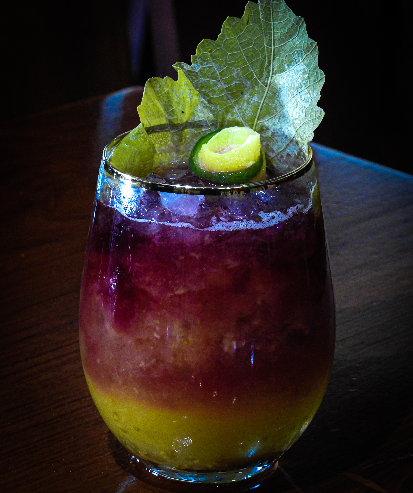

FOTOGRAFÍA

Se captura la esencia de cada momento a través de lentes especializadas. Se ofrece fotografía de producto y publicitaria, documental,
fotoperiodística, culinaria y de naturaleza, siempre con un enfoque creativo y profesional.
FOTOGRAFÍA PUBLICITARIA Y DE PRODUCTO
Imágenes impactantes y profesionales para catálogos, e-commerce, campañas y marcas. Cada foto resalta los atributos y la esencia de tu producto, potenciando su valor visual y comercial.
.jpg) 




FOTOGRAFÍA DOCUMENTAL Y FOTOPERIODÍSTICA
Historias reales y reportajes visuales que capturan la esencia de personas, lugares y acontecimientos. Cada imagen narra un relato auténtico y conmovedor.


FOTOGRAFÍA GASTRONÓMICA
La belleza y el detalle de la comida capturados en imágenes que despiertan los sentidos. Ideal para restaurantes, chefs y marcas culinarias.

 

FOTOGRAFÍA DE NATURALEZA
Se captura la belleza natural en su máxima expresión: paisajes, flora, fauna y detalles únicos del entorno. Imágenes que transmiten la grandeza y la serenidad de la naturaleza.